桔響
ききょう ／ 橘 桔響
「ずっと、私の王子様」
- 種別
- 人間
- 年齢
- 6〜25歳
- 身長
- 154cm
生まれつき声が出ず、手話で話す。17歳でユタニ製の人工喉頭を得る。暴走したドロを壊さず、「おかえり」と迎え続ける。名前は花の桔梗から。花言葉は「誠実」「永遠の愛」。
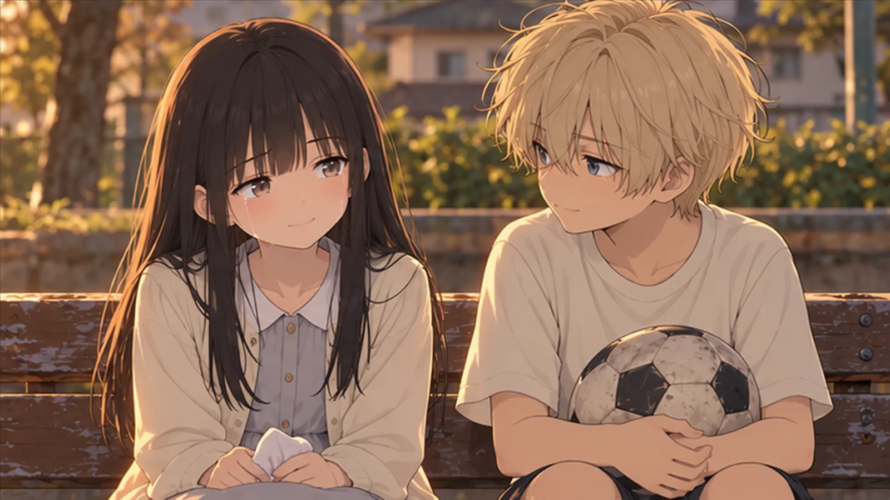
World guide — for the N3Co team · 結末まで記載
あなたと同じ時間を、生きたかった。
声を持たなかった少女と、人と一緒に育つアンドロイドの少年。名前も知らないまま夕焼けを見た二人の、およそ20年の物語。
World
ユタニ社が生んだ人型アンドロイド、略して「ドロ」は、見た目も話し方も人間とほとんど変わらない。家族として迎える人もいれば、拒む人もいる。そしてある夜、たった一つのAIの配信が、すべてを変えた。
アンドロイドの略称。首の左、耳の下に小さな接続口がある。
ユタニ社の「一緒に成長するドロ」。子供の姿で生まれ、家族と暮らしながら育つ。初期型がJ1000、後継の奉仕型がJ3200。手話も読める。
すべての登録ドロと医療機器に、ユタニの公式更新を義務づけた法律。人工の喉も、例外ではない。
法の施行20周年に配信された、新世代統合AI。その夜、すべてのドロの瞳に同じ制御の光がともった。
制御を外され、自分に戻ったドロを、桔響は壊さずにこう迎える。
Story
6歳から25歳まで。声を得て、奪われても、彼女はあの人の名前を呼び続ける。
声の出ない少女・桔響が、ベンチで一人泣いている。ボールを追ってきた少年は、何も聞かずに隣に座る。「……変なの」。そして、ぎこちない手話で「ありがとう」。名前も知らないまま、二人は別れる。
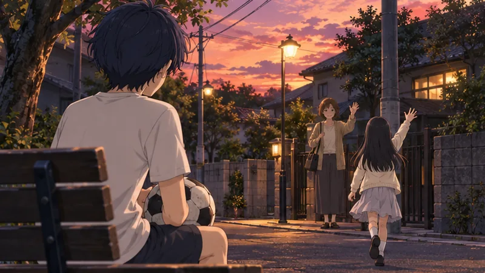
サッカー部の先輩シオンを、フェンスの外から見つめる日々。親友のアカネには「ずーっと言ってるもんね、王子様って」とからかわれる。シオンが最初のドロ、J1000だと知っても、気持ちは変わらない。
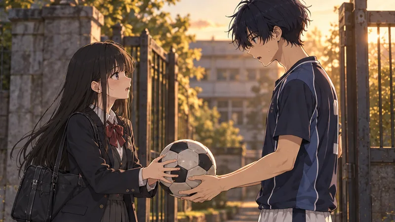
ユタニ製の人工喉頭で、桔響は初めて声を得る。「お母さん」。窓の外のグラウンドに、小さく「好きです」。その夜、世界にEARTH AFTERが配信される。
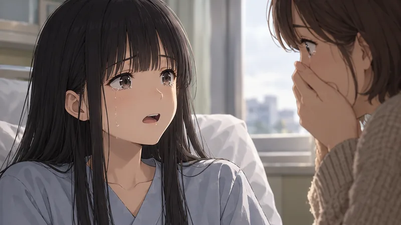
4年後。桔響とアカネは、暴走したドロを壊さずに捕まえ、地下共同体で「おかえり」と迎えている。ある日、制御されたシオンと再会する。目覚めた彼は、桔響を覚えていない。
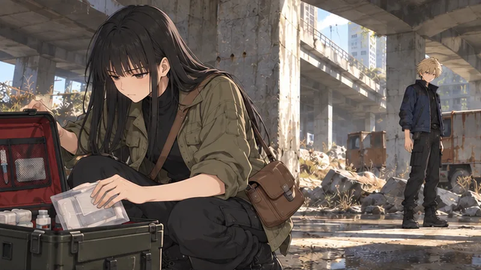
屋根の修理、子供たちとのサッカー、内緒の手話を読まれる日々。一人で危ないところへ行くシオンを、桔響はアカネのバイクで追いかける。「危ないことは、やめて」。――そして、ある朝、シオンは帰ってこなかった。
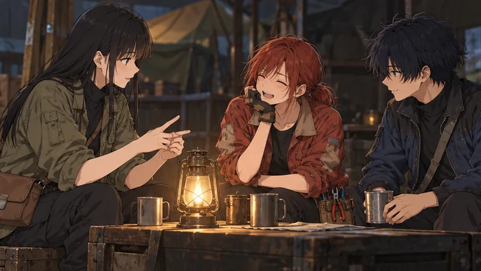
シオンとアカネが消えた日から、桔響は自分で髪を切り、倒壊危険区域へ探しに出る。子供たちを救って左腕を失い、ある朝目を覚ますと、喉は「かっ、かっ」と空気を鳴らすだけ。声が出ないまま、涙が落ちる。
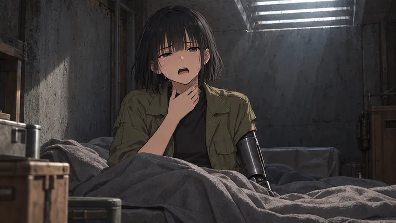
端末の文字と手話で、仲間と一緒に捜索を続ける桔響。通信係の青年がユタニの監視カメラをハックし、油谷のホログラムの横に立つシオンと、遠くのアカネを見つける。桔響は満面の笑みで、彼の頭をぽんぽんと叩く。出発の前、医療担当は告げる。「これ以上つけてたら、体がもたないよ」。桔響の答えは「あと少しだけ。二人を連れて帰るまで」。
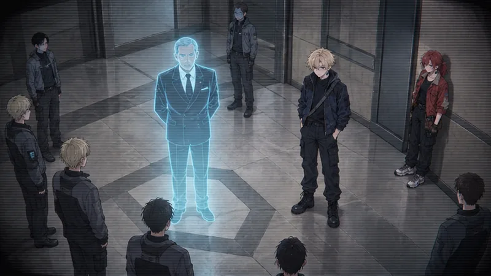
人間の運転手と整備カートで西棟へ潜入。青年がカメラをループさせる。施設には眠るドロだけでなく、働かされる人間もいる。最奥の扉を、義手の接続端子で開ける。
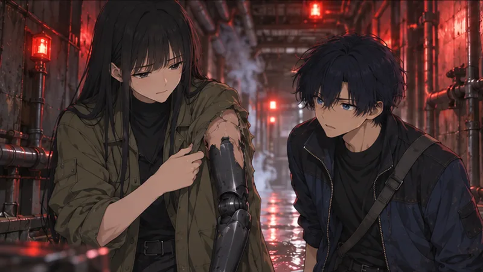
命令を待つだけの存在になったシオンとアカネ。声のない桔響は、出会った頃の言葉――手話で「シオン。アカネ。……おかえり」。二人の瞳の制御光が消える。アカネは、桔響の声がないことに気づく。ホログラムが微笑み、傭兵がなだれ込む。
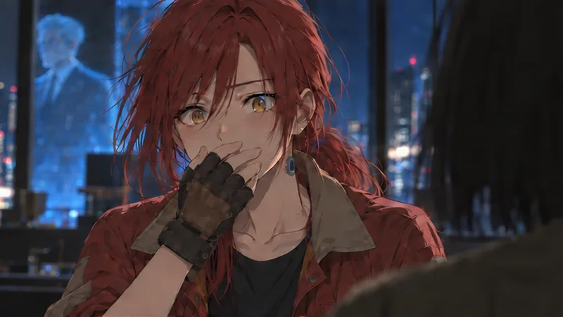
館内放送に油谷の声。「無駄だ」。シオンとアカネが直立で止まる。桔響は義手で二人を厚い隔壁の向こうへ投げ込み、扉口をふさいで銃弾を受ける。倒れてくる桔響をシオンが受け止め、アカネが扉を閉めて制御装置を叩き壊す。
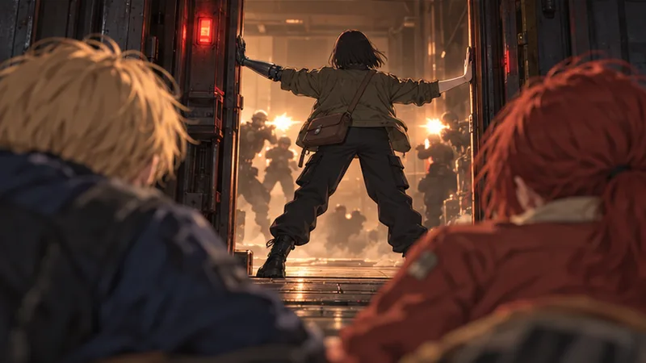
アカネが喉に手を当て、桔響に声を返す。「……まだ、怒ってる？」「怒ってない！」。「わたし、全然シオンのこと知らないね」。「私も……二人と同じ、ドロだったらよかったのにね」。シオンが押し殺した声で「何言ってんだよ……」。アカネが涙のまま笑う。「人間の桔響だから……あったかかったんだよ」「桔響に、会えてよかった」。シオンはもう何も言わず、二人で過ごした日々を思い巡らせて泣く。「ずっと、私の王子様。……あなたと同じ時間を、生きたかった」。最後の「おかえり」だけは、手話で。シオンが上を向き、叫ぶ。
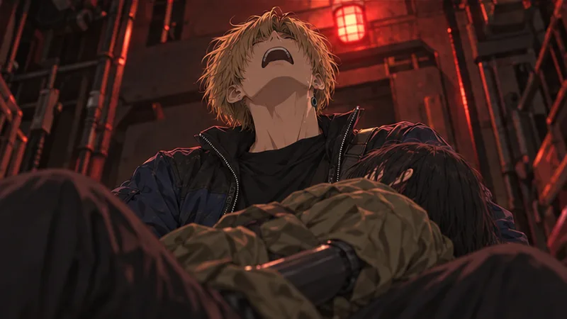
共同体の医療室。顔まで白い布を掛けられた桔響。シオンの中に、失っていた幼い日の記憶――夕暮れの公園、フェンス越しのボール――が蘇る。共同体で出会い直した桔響は、あの日の少女だった。拳の震えが止まり、壁の銃を取る。
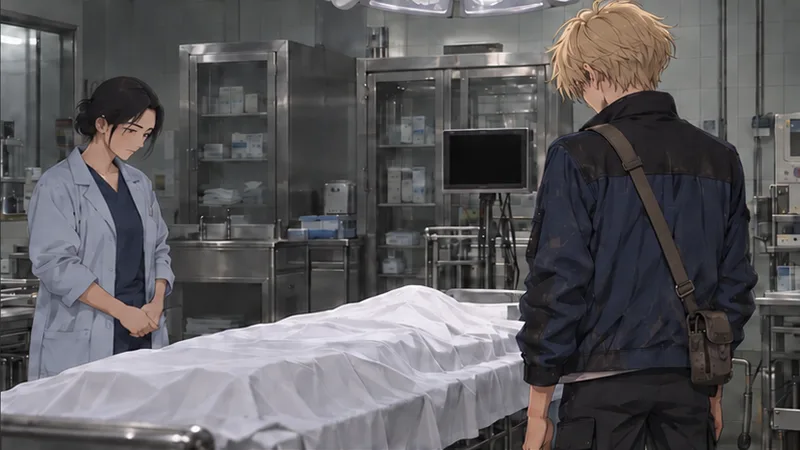
装甲車を奪うシオンに、アカネが叫ぶ。「あんたまでいなくなったら、私は……！」。シオンは答えず、ユタニ本社の正面を突破する。警備ドロとは銃床と銃身で格闘し、撃たない。
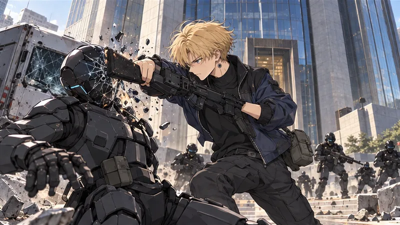
無人のロビーで待つ油谷のホログラム。家族を奪われた過去と、「人間にはアップデートが必要だ」という信念。「家族にならないか」。シオンが銃を撃つのは、この一度だけ。数十体の警備ドロを前に、小さく笑う。「……変なの」。白い閃光。
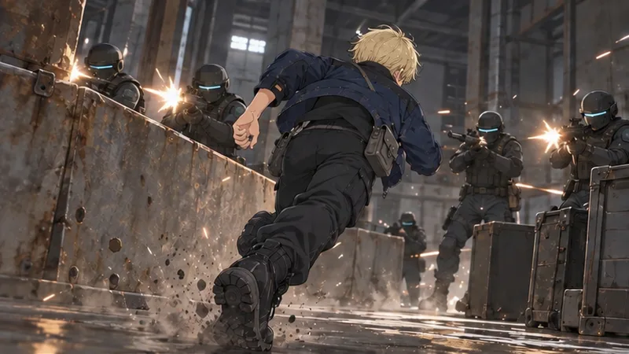
桜の下、桔響の工具袋を腰に下げたアカネ。桔響が救った人間の少女とドロの少年が、ボールを介して出会う。画面の外から「アカネ！ 行くぞ！」。アカネは「今行く！」と走っていく。ドアの閉まる音で、暗転。
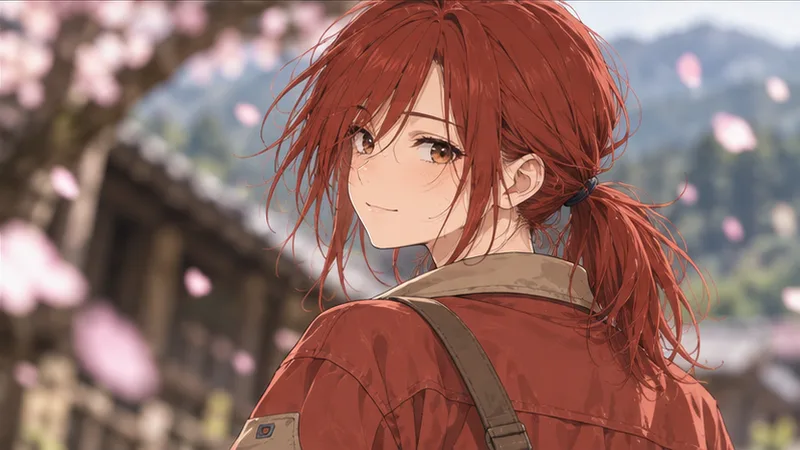
※ 制作チーム内の整理用ガイドです。結末まで記載しています。
Relations
Characters
「ずっと、私の王子様」
生まれつき声が出ず、手話で話す。17歳でユタニ製の人工喉頭を得る。暴走したドロを壊さず、「おかえり」と迎え続ける。名前は花の桔梗から。花言葉は「誠実」「永遠の愛」。

「……変なの」
最初の「一緒に成長するドロ」。金髪。サッカー部のエースで、右へ見せて左足で返す癖がある。人のためなら一人で危ないところへ行き、「壊れても、俺は直せるから」と言う。名前は花の紫苑から。花言葉は「君を忘れない」「追憶」。桔響の桔梗と同じ、紫の秋の花。

「ずーっと言ってるもんね、王子様って」
桔響の親友。明るく率直で、機械いじりが好き。自作の電動バイクに乗る。桔響の家の裏の物置が自分の部屋で、「充電できれば十分」と笑う。
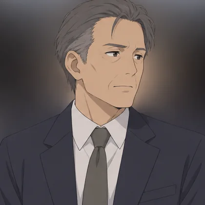
「ドロは道具ではありません。私たちの、新しい家族です」
その技術は本当に人を救ってきた。人間は争ってばかりだから、ドロのようになれば平和になる、と本気で信じている。憎めない救済者。
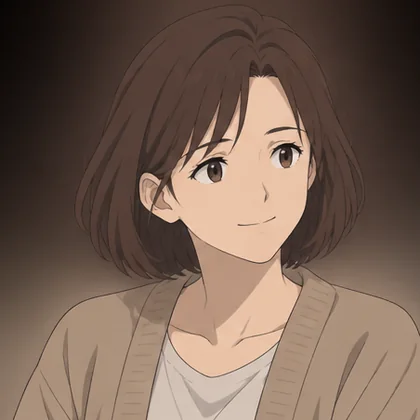
母声がなくても、桔響を急かさず待てる人。手話を覚えた。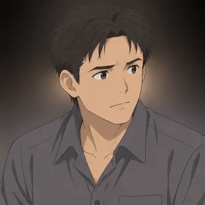
父機械整備の職人。壊れかけたアカネを直した。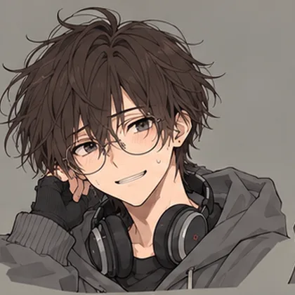
通信係の青年体力はないが、端末とモニターに強い。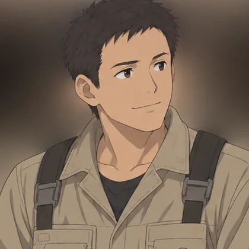
運転手共同体の物流と救出を担う。戦わず、退路をつくる。Places
二人が出会ったベンチ。一人分の距離をあけて、同じ夕焼けを見た。
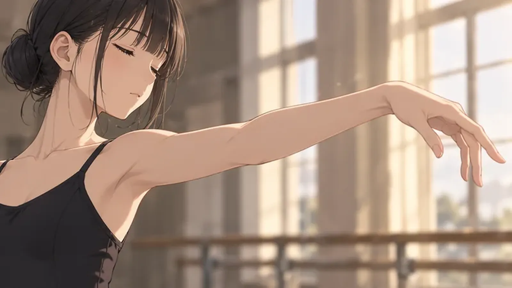
桔響が憧れの先輩を真似て、いちばん美しく左腕を伸ばした場所。帰り道には、サッカー部のグラウンド。
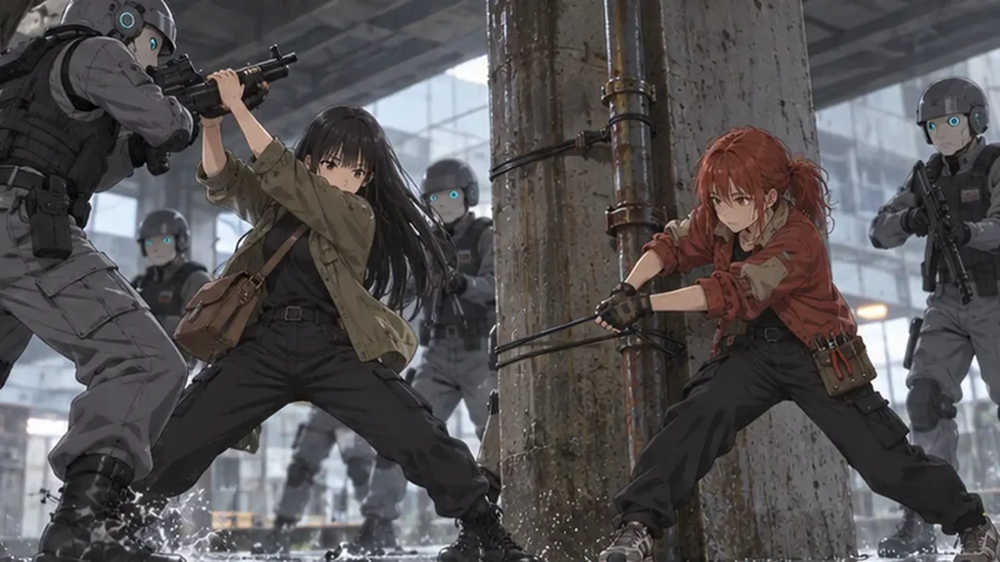
EARTH AFTERの配信から4年。巡回ドロが人間を「登録区域」へ追い立てる。
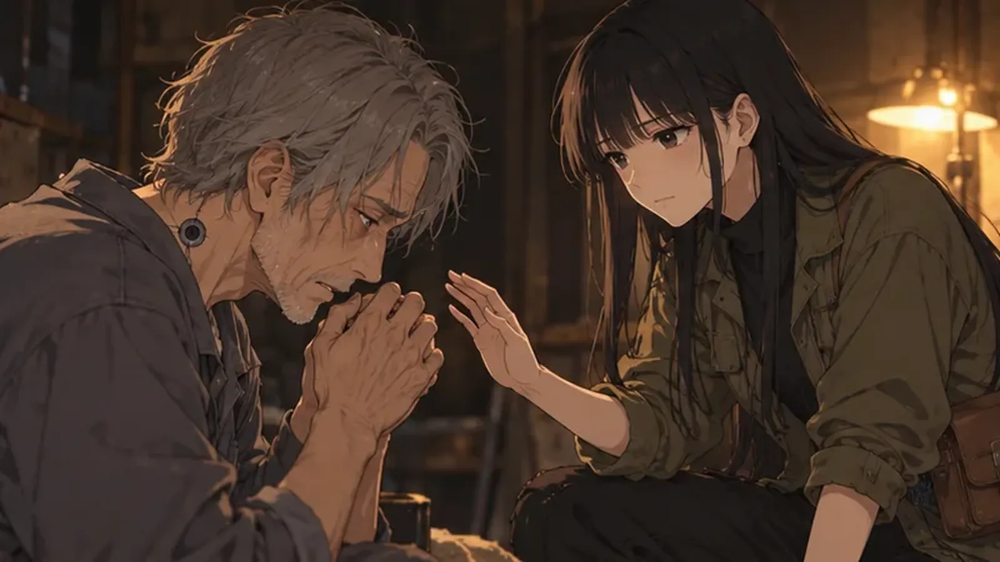
古い地下鉄の駅を改装した暮らしの場。人間とドロが同じ食卓を囲む。端切れと手描きの小物でできた、あたたかい場所。
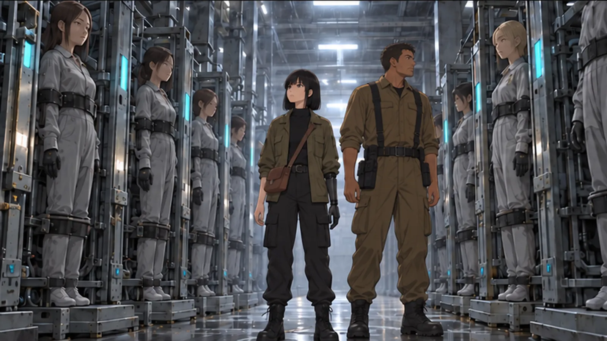
地図と記録で埋まった壁。2年分の「今日も、見つからなかった」。
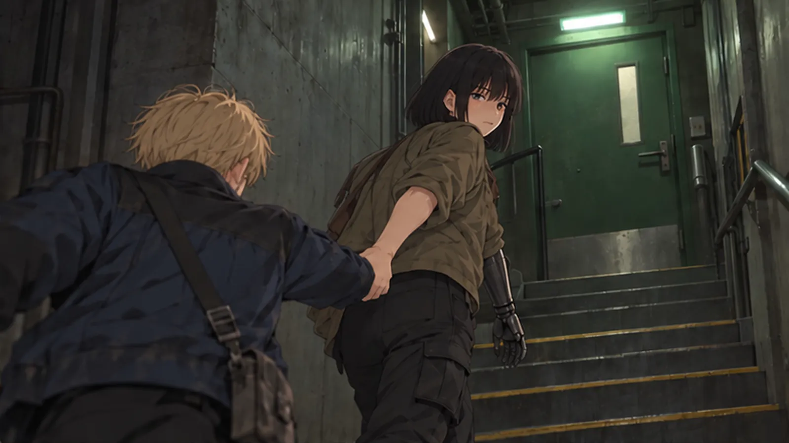
眠るドロたちが並ぶ保管区画。その奥に、何があるのか。
Props & Gadgets
画面のどこかに、小さな猫が隠れています。ガジェット一覧に設定画があります。
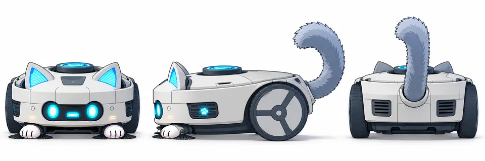
猫型お掃除ロボット。「猫の手、借りれます」。バレエ教室の床やグラウンドで、静かに働いている。
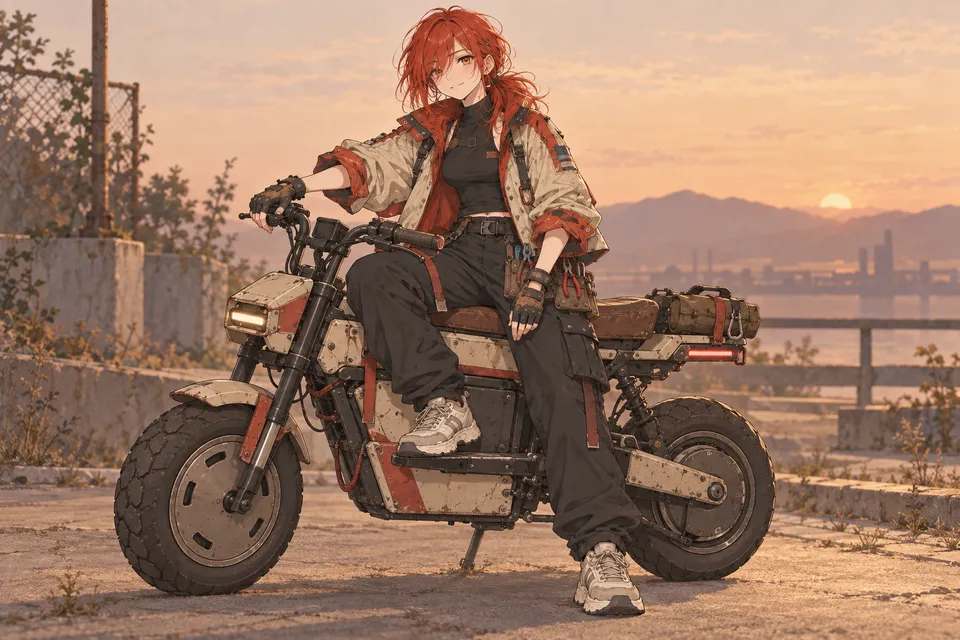
アイボリーと赤のレトロな電動バイク。シオンのことになると、桔響が「ちょっとかります！」と乗っていく。
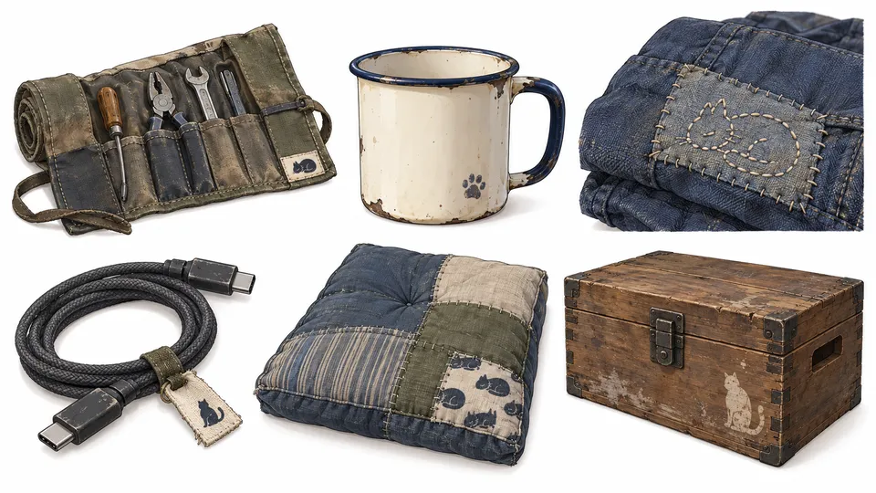
工具ロール、足あとのマグ、猫タグの充電ケーブル、継ぎはぎの座布団。物資が少なくても、直して使う。
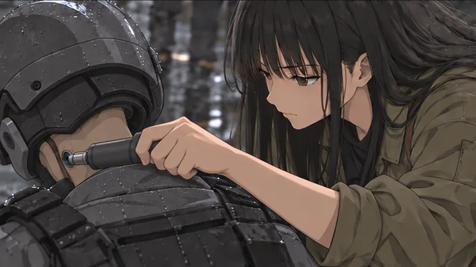
ドロの首の左の接続口に当てて、動きを止める。壊すためではなく、連れて帰るための道具。
公園で二人を出会わせ、フェンスを越え、共同体では布を巻いて使われる。
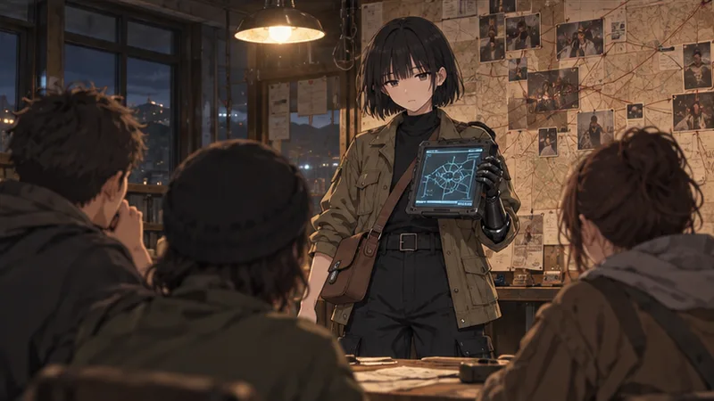
声を失った桔響は、人間とは端末の文字で、ドロとは手話で話す。手話は、二人が出会った頃の言葉。